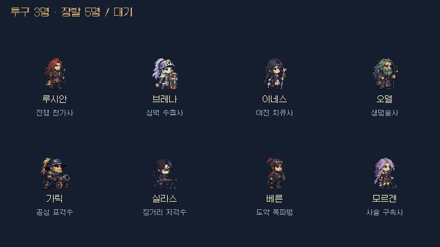

Tracefolio REPORTS & ISSUES
Tracefolio REPORTS & ISSUES 캠프 가디언작업 결과
캠프 가디언작업 결과신규 대장 중3명만 투구형으로 혼합
검증 대기브레나·가릭·베른3명만 열린 면갑/포병 철모/고글 투구로 바꾸고 나머지5명과 부하 외형을 유지했습니다.
작업 결과
6개 편집 원본·프롬프트·정규화 출력·아이콘·미리보기 저장 및 실제 Godot64프레임 렌더 확인 완료. 게임 배포 빌드는 미실행입니다.
변경 내용
적용 내용
브레나(aegis)는 열린 면갑과 뒤쪽 흰색 포니테일,가릭(artillerist)은 포병 철모와 뒤로 묶은 금발,베른(saboteur)은 고글 달린 철제 투구와 뒤쪽 붉은 머리로 수정했습니다. 각 기본/시전48자세와 호흡8자세에 같은 투구를 반영했습니다. 새 원본은 art/source/roster-v14,정확한 내장 imagegen 편집 프롬프트는 tools/roster-v14-helmets.json,이전 원본/출력은 v13 및 v14/previous에 보존했습니다.3명 부분 출력과 아이콘을 연결하고 기준판/아트 가이드/스타일/프로젝트 지침을 갱신했습니다.

검증
Godot4.7.2/GTX970 OpenGL 실제64프레임,대기·걷기·공격·시전과좌우 출력 확인,종료0/실행 오류0.3명 모두46px 체형과80×80/발(40,64),48/48·대기8/8 고유 프레임 해시. 다른 클래스/부하 PNG96개 해시 동일,대장16/부하20 메타데이터 유지. 별도 테스트·전체 회귀는 요청하지 않아 작성/실행하지 않았습니다.
남은 사항
최종 사용자 디자인 평가는 미확인입니다. 게임 내보내기/배포와 전체 전투 재검사는 미실행입니다. 전체 용어 검사에서는 이번 변경 밖 monsters.json/build-monsters.mjs의 기존 금지어2건이 확인돼 이 작업에서 수정하지 않았습니다. 중앙 사이트는 앞선 작업에서 Cloudflare1042를 반환했으며 이번 결과 등록/푸시·배포·원본 HTTPS는 별도로 확인합니다.
작업 시간
- 제안 시간: 2026-11-18 15:49:51 KST 시작,10~15분 예상.
- 실제로 완료된 시간: 2026-11-18 16:00:37 KST 구현·저장·실제 렌더 완료,실측10분46초. 중앙 등록은 이후 별도 진행합니다.
- XERJ: 미사용 — rg·내장 imagegen 원본 편집·정규화·PNG 해시 대조·실제 Godot 렌더/로그.